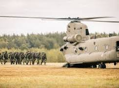
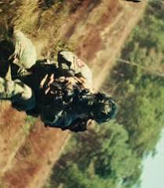
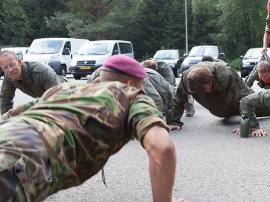
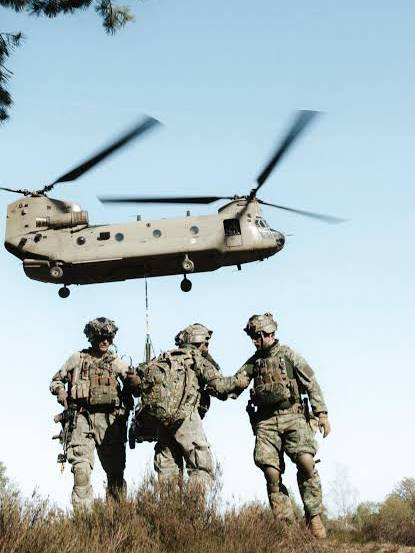
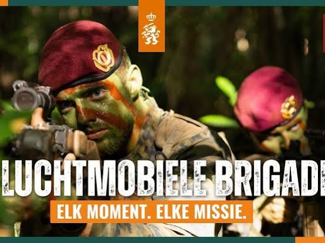
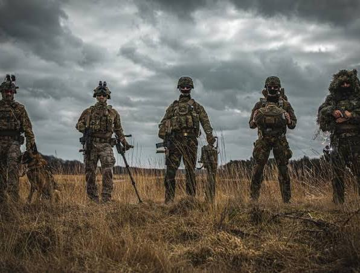
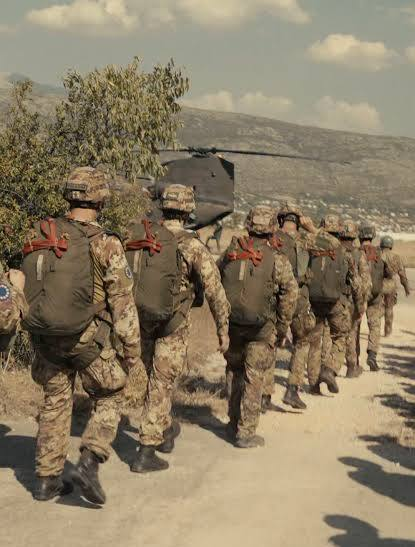

Conversation 995
Kikvorsmannen Korps Mariniers
Prompt 1 · You
kikforce man field marine commando frogman heette het vroeger nederlandse KLTC toch
Response 1 · Google AI Mode
Nee, dat klopt niet helemaal; er is sprake van een spraakverwarring en een mix van verschillende termen. De Nederlandse militaire duikers en special forces die jij bedoelt heten van oudsher kikvorsmannen (of simpelweg "kikkers") en zij vallen onder het Korps Mariniers.  Instagram +1
Instagram +1
Instagram +1De afkorting KLTC en de term "Kikforce" bestaan niet binnen de Nederlandse krijgsmacht. Waarschijnlijk doel je op een van de volgende historische of actuele termen:
1. Kikvorsmannen / Frogmen
De Nederlandse "commando frogmen" heten officieel kikvorsmannen. Vroeger stonden de operationele teams bekend onder namen als de Vaste Kikkerploeg (VKP) (opgericht in 1963) en later het Amfibisch Verkenningspeloton (AMFVERKPEL). Tegenwoordig zijn zij als Special Forces Underwater Operators volledig geïntegreerd binnen NLMARSOF, de elite-eenheid van de marine.
Uitgeverij Klus op Dek +3
2. De verwarring met KLTC / KCT
De afkorting KLTC is vermoedelijk een husseling van twee bestaande termen:
- KCT (Korps Commandotroepen): Dit is de Special Forces-eenheid van de Koninklijke Landmacht. Hoewel het KCT ook een specialisatie heeft voor wateroperaties, zijn de échte, traditionele kikvorsmannen van oudsher mariniers van de Marine.
- KL (Koninklijke Landmacht): De "KL" staat voor de landmacht, terwijl kikvorsmannen bij de KM (Koninklijke Marine) horen. Werken bij Defensie +3
3. Kikforce / Kick Force
De term "Kikforce" is waarschijnlijk een fonetische verbastering van hoe men in de wandelgangen spreekt over de "kikvorsmannen-force" of een YouTube-video/publieke term (zoals "Kickforman"). Internationaal worden ze aangeduid als Combat Divers of Commando Frogmen.  YouTube +2
YouTube +2
YouTube +2
Source links preserved from this response
- Korps Mariniers
https://www.defensie.nl/defensieonderdelen/koninklijke-marine/eenheden/korps-mariniers - www.instagram.com
https://www.instagram.com/p/DFudAR7sOG6/ - klusopdek.nl
https://klusopdek.nl/product/kikvorsmannen-korps-mariniers-65-jaar-op-systeem-en-onder-druk/ - Korps Commandotroepen
https://www.defensie.nl/defensieonderdelen/koninklijke-landmacht/eenheden/kct - werkenbijdefensie.nl
https://werkenbijdefensie.nl/commando - www.youtube.com
https://www.youtube.com/watch?v=UGopyYP2BBs - nl.wikipedia.org
https://nl.wikipedia.org/wiki/Korps_Commandotroepen
Prompt 2 · You
KLTC LUCHTMOBIEL
Response 2 · Google AI Mode
De combinatie "KLTC LUCHTMOBIEL" is een husseling van verschillende militaire termen. Binnen de Nederlandse krijgsmacht bestaat de afkorting KLTC niet. Waarschijnlijk bedoel je de 11 Luchtmobiele Brigade (onderdeel van de Koninklijke Landmacht) in combinatie met een andere operationele afkorting.







Hier is de uitleg hoe deze puzzelstukken waarschijnlijk in elkaar vallen:
1. 11 Luchtmobiele Brigade (LUMBL)
Dit is de snel inzetbare, lichte infanteriegevechtseenheid van de Koninklijke Landmacht (KL). Zij staan bekend om hun rode baretten en trainen intensief met de transporthelikopters (zoals Chinooks en Apaches) van de luchtmacht. Hun officiële militaire afkorting is 11 LMB of 11 LUMBL.
Defensie +2
2. Waar komt "KLTC" dan vandaan?
Het is zeer aannemelijk dat je een van de volgende termen in gedachten hebt:
- KCT (Korps Commandotroepen): De échte commando's van de Landmacht. Soms halen mensen de letters van de KL (Koninklijke Landmacht) en het KCT door elkaar, wat fonetisch zoiets als "KLTC" kan worden. Defensie
- LTC (Landelijk Tactisch Commando): Dit is het operationele hoofdkwartier van de Koninklijke Marechaussee. Dit heeft echter niets met Luchtmobiel of kikvorsmannen te maken. Defensie
De link tussen Luchtmobiel en Kikvorsmannen
Om terug te komen op je vorige vraag over de kikvorsmannen (maritime commando frogmen):
11 Luchtmobiele Brigade heeft geen kikvorsmannen. Kikvorsmannen horen puur bij de marine (NLMARSOF) en in mindere mate bij speciale water-infiltratieteams van het KCT. Wel beschikt de Luchtmobiele Brigade over Pathfinders en Verkenners die via de lucht of het water landingsplaatsen verkennen, maar dit zijn geen kikvorsmannen.
11 Luchtmobiele Brigade heeft geen kikvorsmannen. Kikvorsmannen horen puur bij de marine (NLMARSOF) en in mindere mate bij speciale water-infiltratieteams van het KCT. Wel beschikt de Luchtmobiele Brigade over Pathfinders en Verkenners die via de lucht of het water landingsplaatsen verkennen, maar dit zijn geen kikvorsmannen.
Werken bij Defensie +1
In deze video van de Koninklijke Landmacht zie je militairen van de Luchtmobiele Brigade in actie tijdens een recente missie:

Source links preserved from this response
- www.defensie.nl
https://www.defensie.nl/defensieonderdelen/koninklijke-landmacht/eenheden/11-luchtmobiele-brigade - www.defensie.nl
https://www.defensie.nl/defensieonderdelen/koninklijke-landmacht/eenheden/kct - www.defensie.nl
https://www.defensie.nl/defensieonderdelen/koninklijke-marechaussee/eenheden/landelijk-tactisch-commando - werkenbijdefensie.nl
https://werkenbijdefensie.nl/commando - www.youtube.com
https://www.youtube.com/watch?v=5UWPXzKn2ms - www.zuidwestupdate.nl
https://www.zuidwestupdate.nl/nieuws/groene-baretten-zoeken-nieuwe-kazerne-kct-is-postzegel-in-woonwijk/
Prompt 3 · You
LUCHTMOBIEL Pathfinder APEX LEGENDS TOM KLOOTWIJK EN KICKINFORSEFIELDMANUAL FORCEFIELD VR VARADADA CAGE
Response 3 · Google AI Mode
Het lijkt erop dat je een stroom van associaties deelt waarin militaire termen, gaming (Apex Legends), Virtual Reality (VR), popcultuur en mogelijk specifieke namen kriskras door elkaar lopen.
Laten we deze ketting aan begrippen stap voor stap ontwarren:
1. Luchtmobiel Pathfinder & Apex Legends
Je legt hier een heel logische link tussen de echte wereld en gaming:
- Luchtmobiel Pathfinder: Dit is een échte, elite verkenningseenheid binnen de 11 Luchtmobiele Brigade. De Pathfinders (gidsen) springen vaak als allereerste ver achter vijandelijke linies per parachute uit het vliegtuig om landingszones voor helikopters te verkennen en te beveiligen.
- Apex Legends (Pathfinder): In het populaire schietspel Apex Legends is Pathfinder een van de bekendste personages (een vriendelijke robot). Zijn vaardigheden — zoals het schieten van een grijphaak (grappling hook) en het uitzetten van een tokkelbaan (zipline) om zijn team snel te verplaatsen — weerspiegelen precies de tactische, mobiele rol die echte militaire Pathfinders ook hebben.
2. "Tom Klootwijk"
Binnen de Nederlandse krijgskrachten is er een bekende operationele commandant genaamd Theo Klootwijk (Kapitein-ter-zee bij de Marine), maar de exacte naam "Tom Klootwijk" in combinatie met Luchtmobiel of Apex Legends lijkt een specifieke persoonlijke referentie (bijvoorbeeld een gamertag, een herinnering aan een bekende, of een specifieke content creator/militair).  LinkedIn
LinkedIn
LinkedIn3. "Kickinforcefieldmanual Forcefield"
Dit is de fonetische evolutie van de termen uit je vorige vragen ("Kikforce man field marine"). Je bent hier waarschijnlijk concepten aan het mixen:
- Field Manual: De officiële term voor een militair handboek (bijvoorbeeld een Tactical Field Manual).
- Forcefield: Dit verschuift het gesprek direct naar Sci-Fi en gaming. In games (zoals Apex Legends met het personage Gibraltar of Wattson) speel je vaak met forcefields (krachtvelden) om binnenkomende kogels en granaten te blokkeren.
4. "VR Varadada Cage"
Dit brengt het hele verhaal samen in de wereld van Virtual Reality:
- Dit klinkt als de omschrijving van een VR Cage of een VR Omni-directional Treadmill (zoals de Virtuix Omni of Cyberith Virtualizer). Dit zijn speciale ronde kooien of platformen waarin je vastgesnoerd zit, zodat je fysiek 360 graden rond kunt rennen, bukken en springen in een VR-game zonder tegen je echte huiskamermuur aan te botsen.
Bedoel je hiermee dat je een VR-simulatie of game aan het spelen bent waarin je als een futuristische Luchtmobiel / Pathfinder door een arena rent met krachtvelden?
Source links preserved from this response
- 11 Luchtmobiele Brigade
https://nl.linkedin.com/in/tom-klootwijk-8747848 - nl.linkedin.com
https://nl.linkedin.com/in/theo-klootwijk-1512424